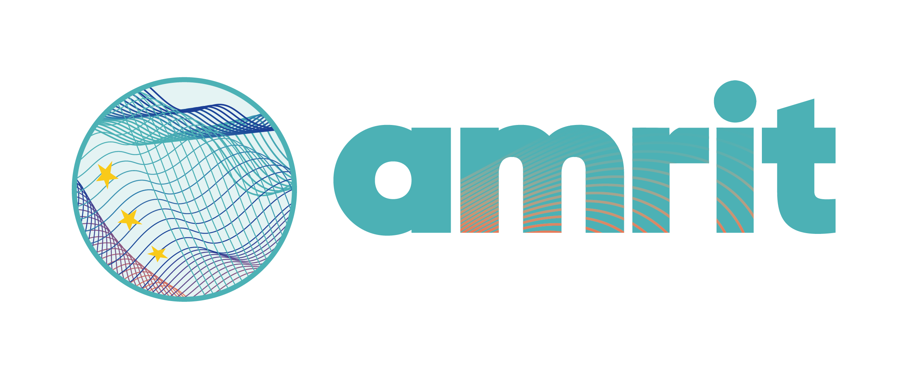
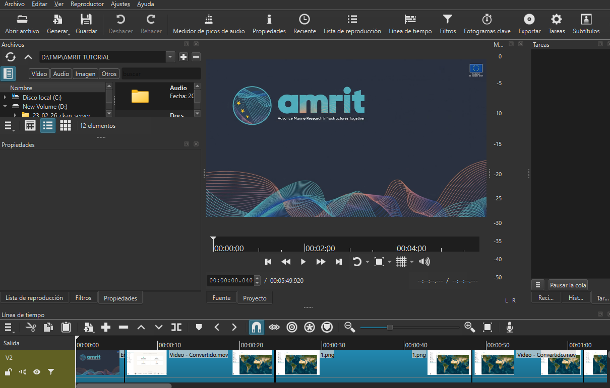
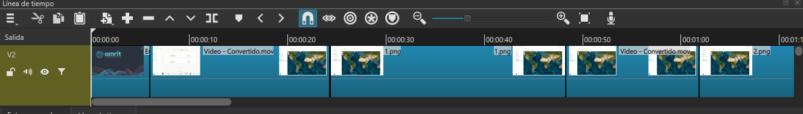
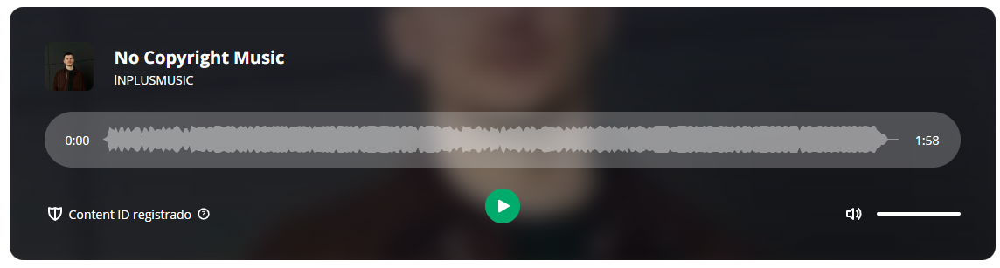

How to produce a video tutorial for a web application
From script to video. The PLOCAN procedure
▷General workflow overview
The following diagram summarises the stages of the process and the tools used at each one. It reflects the workflow followed by PLOCAN for this tutorial: this is how the work was carried out here, but it is by no means the only possible approach — many other combinations of tools or orderings of the stages can lead to an equally good result.

◆Before you start: tools and preparation
Only free tools are needed to follow this guide:
| Tool | Purpose | Where to get it |
|---|---|---|
| XXbox Game Bar | Screen recording | Included in Windows 11 (Win + G) |
| SShotcut | Video editing | shotcut.org ↗ |
| AIAI Dubbing | Voice-over generation | aidubbing.io ↗ |
| AAudacity | Audio clip editing (splitting, inserting pauses…) | audacityteam.org ↗ |
| PPixabay (lnplusmusic) | Royalty-free background music | pixabay.com ↗ |
| GGoogle Flow | Generation of the video intro and closing sequence (AI) | flow.google ↗ |
Preparing the environment before recording:
- Prepare the application. Build the code if necessary and browse through the pages so that they are loaded in advance and delays are avoided.
- Close unnecessary tabs and programs.
- Turn off Windows notifications (Do Not Disturb mode).
- If the application text does not display at the right size in the video, you can increase or decrease the browser zoom (Ctrl + + / Ctrl + −).
AThe script
A1. A first script is drawn up that sets out, step by step, the features to be shown in the video.
A2. Next to each point of the script above, the actions to be performed on screen are described in order to demonstrate each of the features.
A3. The narration texts are added. This text is provisional, but it is useful to have it from this stage onwards in order to match the length of the on-screen actions with the length of the voice-over for each section.
Script point: [SECTION 4 – Show a general overview of the menu] (Duration: ~30 s)
Action:
- Show the opening icon.
- Open the menu and quickly go through the 5 sections (without going into detail yet).
- Point out that the "Operational Layer" is the main one and is active by default.
- Close the menu with the close button.
Voice-over: "This icon opens the menu. Here we have five sections: Projection, Layers, Custom Layers, Legend and Base Map..."
BScreen recordingXbox Game Bar
The recording was made with a native, completely free tool that already comes built into Windows 11: the Xbox Game Bar. Although its name is aimed at gamers, it is an excellent, very lightweight screen recorder for capturing any program or tutorial. Best of all, you do not have to install anything at all: simply press Win + G to open the menu and click the record button (the direct shortcut Win + Alt + R starts and stops recording without opening the menu). It is fast, free and comes built into the system.
Video only, no audio. We configured the recording to capture video only, with no audio. The advantage of this decision is that the narration is dubbed on afterwards: the audio can be re-recorded as many times as needed without touching the video.
Important considerations:
- It records windows. This tool records windows, not the entire desktop, so you must select the browser or the window where the application you want to record is running.
- A clean screen. If you are recording the browser, maximise its window so that it fills the whole screen and press F11 so that the top and bottom bars and the menus do not appear.
- Quality. The recording settings (frames per second, quality) are found in . 30 fps is usually enough.
- The files are saved automatically to the
Videos\Capturesfolder. Copy them to the project folder and rename them in an organised way (e.g.01_login.mp4,02_form.mp4…); this will make the editing stage much easier.
Videos for playback on computers are normally produced in 16:9 format (e.g. 1920×1080), so the recording must have that aspect ratio. Getting this wrong at this stage would affect all the later work, and it cannot be fixed properly during editing.
If your monitor is not 16:9 (for example, a 16:10 laptop screen), there are two solutions:
- Switch the display to a 16:9 resolution (preferably 1920×1080; otherwise 1600×900) while recording.
- Give the browser window a 16:9 size (preferably 1920×1080; otherwise 1600×900) instead of using full screen.
If you apply either of these changes, testing becomes essential: make a short test recording, check its resolution and import it into Shotcut before starting the final recording. Step-by-step instructions are in Tip 5.
Record in parts. It usually gives better results to record the action in parts; to do so, note the exact image where each part ends, so that the next part starts on the same screen with the mouse in the same position. It is also useful to wait one or two seconds at the end of each take, without moving anything, to leave room for manoeuvre when cutting during editing.
CVideo editingShotcut
For editing we used the free tool Shotcut (https://shotcut.org), a cross-platform, open-source video editor that adds no watermarks to exports and requires no registration.

Basic editing procedure:
- Set the video mode of the project before you start: . Do this before adding the clips so that they all adapt to that format.
- Load the clips: drag the video files from the captures folder to the Playlist panel and from there to the Timeline, or directly onto the timeline.
- Arrange the clips on the timeline following the order of the script.
- Cut and trim: place the playhead at the cutting point and split the clip with the S key; delete the unwanted piece with Del and close the gap by dragging the adjacent clips together (or by enabling Ripple mode).
- Save the project (.mlt file) frequently while you work.
Note: these instructions may vary depending on the version of Shotcut used; that is why it is advisable — and very quick — to ask any AI assistant how to perform these actions in your specific version.
Useful link: official tutorials at https://shotcut.org/tutorials/

DThe narration
With the video track assembled, this is the best moment to review the narration texts. We must check that they match what happens on screen and, by reading them aloud ourselves, make a first estimate of whether their length allows good synchronisation with the picture.
From this first estimate we obtain blocks of text corresponding to the narration, and they must be short. Being short allows us to move them around and position them on the video so that audio and video are well synchronised; long paragraphs are much harder to synchronise.
The resulting blocks are numbered (narr_01, narr_02…) and a note is made of which video fragment each one corresponds to.
EGenerating the final voice-over audioAI Dubbing
We used the free online tool AI Dubbing (https://aidubbing.io/text-to-speech), which generates voice-overs from text with more than 400 voices. It can be used free of charge for limited amounts of text, or a small fee can be paid to generate more audio or use better voices.
For each narration block defined in the previous section, its text is pasted into the generation box (maximum 500 characters per block, which reinforces the need for short blocks) and the voice is selected. Specifically, for our tutorial we used the Wise Lady (English Female) voice, with no additional settings; the tool also offers an Emotion control to modify the tone of the voice-over if a more expressive result is desired.
Once each voice-over has been generated, it must be downloaded and saved in the project folder with the name of the corresponding block (narr_01.mp3, narr_02.mp3…), since the tool's history only keeps the audio files for 15 days; if a file is lost, it would have to be generated again.

FInserting the audio tracks in ShotcutShotcut
With the video assembled and the audio files downloaded, the voice-overs are inserted into the Shotcut project. The recommended approach is to place each individual audio block on a different audio track: this way each block can be moved independently along the timeline until the best possible synchronisation with the picture is achieved, without affecting the rest.
Procedure:
- Add an audio track: on the timeline, menu (or right-click on a track header). Repeat if several tracks are needed.
- Place each voice-over: drag each
narr_XX.mp3file from File Explorer (or from the Playlist) onto the audio track, at the position where it should start playing. - Synchronise: the audio clip displays its waveform, which helps to align the voice-over with what is happening on screen. Ctrl + mouse wheel zooms the timeline time scale for fine adjustments.
- Fades in and out can be created to avoid abrupt jumps between blocks.
- Volume: if a block sounds unbalanced compared with the others, adjust it with the gain/volume filter (see Tip 3 in the "Editing tips and tricks" section).
Useful link: official tutorials at https://shotcut.org/tutorials/

GEditing the audio clips with Audacity (when necessary)Audacity
In some cases the generated voice-overs need touching up before being inserted into Shotcut: splitting an audio file into several blocks, inserting a space (a pause) in the middle of a voice-over, or joining two files together. For this we used Audacity (https://www.audacityteam.org), a free, open-source audio editor available for Windows, macOS and Linux.
Typical use cases:
- Split an audio file into several files. Open the file by dragging it into the Audacity window; on the waveform, select the desired piece with the mouse; and export it with (choosing the option to export only the selection), naming it as a new block (
narr_XXa.mp3,narr_XXb.mp3…). Repeat for each piece. This turns a block that is too long into several short blocks that can be synchronised independently. - Insert a pause in the middle of a voice-over. Place the cursor (click on the waveform) at the point where the silence is wanted and use , specifying the desired duration.
- Remove an unwanted piece. Select it and press Del; the rest of the audio shifts and closes the gap automatically.
- Export the result as MP3 (Audacity includes the encoder; nothing additional needs to be installed) with the name of the corresponding block, overwriting the original if appropriate.

These touch-ups tie in well with Tip 1 in the "Editing tips and tricks" section: if an audio file is longer than its video, in addition to extending the video with its last frame, small pauses can be inserted in the voice-over to adjust the pacing.
HBackground musicPixabayShotcut
We added background music to the video. It is useful mainly in the pauses between voice-overs and at the opening and end of the video, where it fills the silences and gives a feeling of a professional finish.
To avoid copyright issues, the music was taken from Pixabay, a platform offering royalty-free music that can be used freely. Specifically, we used a piece by the author lnplusmusic (https://pixabay.com/users/lnplusmusic-47631836/): the file lnplusmusic-no-copyright-music-corporate-background-367221, downloadable from their page.
Recommendations when adding it:
- Its own track. Place the music on its own audio track in Shotcut, separate from the voice-overs, so that it can be adjusted without touching the narration.
- Very low volume. The music must sound clearly below the voice-over so as not to get in its way; adjust it with the gain/volume filter (see Tip 3 in the "Editing tips and tricks" section).
- Fades. Apply a fade-in at the beginning and a fade-out at the end, and smooth the entrances and exits too if the music is cut in the middle of the piece.
- Duration. If the music is shorter than the video, the clip can be copied and repeated; if it is longer, cut the excess, trying to end on a complete musical phrase.

IThe video intro and closing sequenceGoogle FlowShotcut
To give the tutorial a professional finish, an intro is added at the beginning and a closing sequence at the end — two very short videos — with the corporate identity of the AMRIT project, for which the tutorial has been produced.
Starting materials. The project provides corporate templates in PowerPoint (PPT) format with the official AMRIT logos and texts. Two slides from them were used: one as the opening slide (presentation of the video) and one as the closing slide (farewell). The first step is to export both slides as images: in PowerPoint, (saves the visible slide as an image file), or right-click on the slide > Save as Picture. (If PowerPoint does not allow exporting them, see Tip 4.)
Procedure. The method takes advantage of the frame-export trick (Tip 1 in the "Editing tips and tricks" section) together with an AI video generation tool:
- Obtain the linking frames. Export from Shotcut, with , the first frame of the main video and the last one. The first frame of the video will be the end of the intro (the image the intro arrives at) and the last frame of the video will be the beginning of the closing sequence (the image it starts from).
- Generate the intro. Go to Google Flow (https://flow.google), Google's tool for generating video with artificial intelligence (based on the Veo model). It is used free of charge with a Gmail account, with a limited number of generations; paid plans provide more. Inside Flow, use the Frames to Video mode, which takes a starting image and an ending image and generates a video that progresses from the first to the second. Load the AMRIT opening slide as the initial image and the first frame of the video as the final image, and in the prompt ask for a visually attractive transition between the two, indicating the desired duration and resolution among the available options.
- Generate the closing sequence. Same procedure, but in the reverse order: initial image = last frame of the video; final image = AMRIT closing slide.
- Review and regenerate. AI generation is not deterministic: if the result is not convincing, generate it again (adjusting the prompt if necessary) until a satisfactory result is obtained. Check that the duration and resolution of the generated clip match the rest of the video (16:9, 1920×1080).
- Insert into Shotcut. Place the intro video at the beginning of the timeline and the closing video at the end. For this it is advisable to use two new, independent video tracks (one for each video), so that they can be moved and adjusted without touching the main video. In these sections the background music (section H) can be turned up in volume — there is no voice-over — and can carry a fade-in or a fade-out, which also gives stylistic continuity between the AI-generated videos and the screen recording.
"Starting from the AMRIT title card, create a visually attractive intro animation that transitions smoothly into the application interface shown in the second image. Clean, corporate style, gentle camera motion. Duration: 8 seconds. Resolution: 1920×1080 (16:9)."
Note: depending on the model chosen, the videos generated by Flow may include their own audio. Since our recording has no audio, it can be kept, attenuated with the Gain/Volume filter (Tip 3 in the "Editing tips and tricks" section), or removed in Shotcut. Before generating, it is worth checking whether the model or the available options allow a video with no audio to be requested.


JExport and final reviewShotcut
Once video, voice-over and music are synchronised, and the intro and closing sequences are in place, the final video is exported:
- Format: MP4.
- Resolution: 1920×1080 (16:9), consistent with the original recording.
Before considering the job finished, a full viewing is recommended using this checklist:
Since the voice-over text is already written, generating subtitles (for example, as an .srt file) is quick and greatly improves the accessibility of the tutorial.
Subtitles can be embedded in the video itself during editing, uploaded to the publishing platform as a separate .srt file, or generated in other languages by translating the same voice-over script.
★Editing tips and tricksShotcut
Sometimes the voice-over of a section lasts longer than the available video: the section should last longer because its audio is longer, and we need to gain those extra seconds of video. There is no need to re-record anything; it can be solved in Shotcut as follows:
- Place the playhead on the last frame of the clip for that section.
- Export that frame as an image: . A PNG is saved with the exact image of that moment.
- Import that image and place it on the timeline immediately after the clip (it can go on the same video track or on a new one).
- Extend the image clip by dragging its edge to the required duration, so that it covers the seconds the audio is still missing.
The result is that the section "freezes" on its last image for as long as necessary. Since the still image matches the end of the video exactly, the cut goes unnoticed and synchronisation with the audio is solved.
This same frame-export trick is the basis of section I: the intro and closing sequences of the video are built from the first and last frames.
Shotcut allows effects (filters) to be added to the video, and one of them is the playback speed. With it we can — without overdoing it — speed up or slow down part of the video: for example, to compress a long wait or to make a fast movement easier to see.
- Delimit the fragment first: place the playhead where the part whose speed we want to change begins and cut with the S key; repeat where it ends. This way the effect will apply only to that clip section and not to the whole clip.
- Apply the effect: select the clip section and, in the Filters panel, add the Speed filter.
- Adjust the factor: a value greater than 1 speeds up (e.g. 1.5) and less than 1 slows down (e.g. 0.5). The clip's duration on the timeline adjusts automatically.
Without overdoing it: use it sparingly, only where it adds clarity; a speed very different from normal is noticeable and can look artificial. If the fragment has its own sound, bear in mind that speed also alters the audio.
Among Shotcut's effects there is also one to raise or lower the volume of an audio track or clip, in case the mix needs balancing:
- Select the audio clip (or the track) to which the change is to be applied.
- In the Filters panel, add the Gain / Volume filter.
- Adjust the level: negative values lower the volume and positive ones raise it.
It is the same filter we used to keep the background music well below the voice-over (section H), and it also serves to compensate voice-over blocks that sound at different levels.
Sometimes PowerPoint does not allow the images of a presentation to be exported. In these cases, the file extension can be changed from .pptx to .zip, since .pptx files are in fact zip files. Opening the zip with any compressed-file manager will reveal all the multimedia content of the presentation, including the images.
A reminder of the critical point in section B: the recording must be 16:9. If the monitor does not have that aspect ratio, use one of these options:
Option 1 · Change the screen resolution (the simplest).
- Open .
- Choose a 16:9 resolution from the list, preferably 1920×1080 (available on most 16:10 monitors of 1920×1200); otherwise 1600×900, 1366×768 or 1280×720.
- Depending on the graphics card, the monitor may show black bars or a slightly stretched image; this does not affect the recording. The browser in full screen (F11) will now be 16:9 and the recording will be clean.
- When you have finished recording, restore the original resolution.
Option 2 · Give the window a 16:9 size.
- Resize the browser window to an exact 16:9 size: preferably 1920×1080, which usually fits on a 1920×1200 monitor; otherwise 1600×900. Windows has no built-in way to type an exact size, so a free tool can help, such as the FancyZones utility of Microsoft PowerToys (define a zone of that size and snap the window to it).
- Full screen (F11) cannot be used in this case, because it would take the monitor's aspect ratio. To hide the tabs and address bar, open the application as an app window: in Chrome or Edge, use the browser menu option to install the page or site as an app; it will open in its own window without browser bars.
About quality. With the project set to HD 1080p (section C), Shotcut scales a 1600×900 recording to 1920×1080 without distortion, since both are 16:9, but small text may look slightly less sharp. Record at 1920×1080 whenever possible.
Testing is essential. If you use either of these options, do not start the final recording until you have checked the result. The exact resolution of the recorded file depends on the window size, the Windows display scaling (125%, 150%…) and the capture settings, so it can differ from what you expect (for example, a 1600×900 window at 125% scaling may be recorded at 2000×1125, which is still 16:9). Record a few seconds and:
- Right-click the video file > Properties > Details and check that the frame width and height have a 16:9 ratio (e.g. 1920×1080, 1600×900, 2000×1125).
- Import the test clip into the Shotcut project and check that it fills the frame with no black bars and that the application text is easy to read.